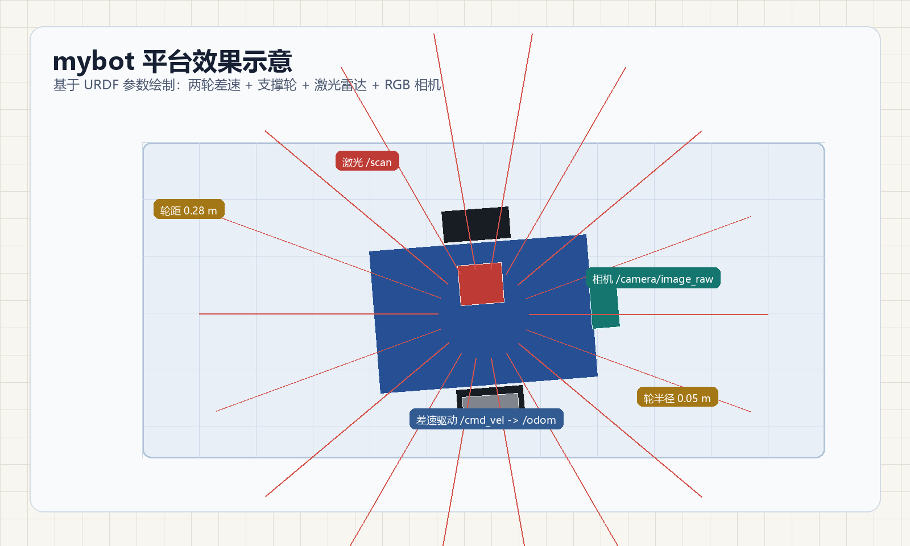
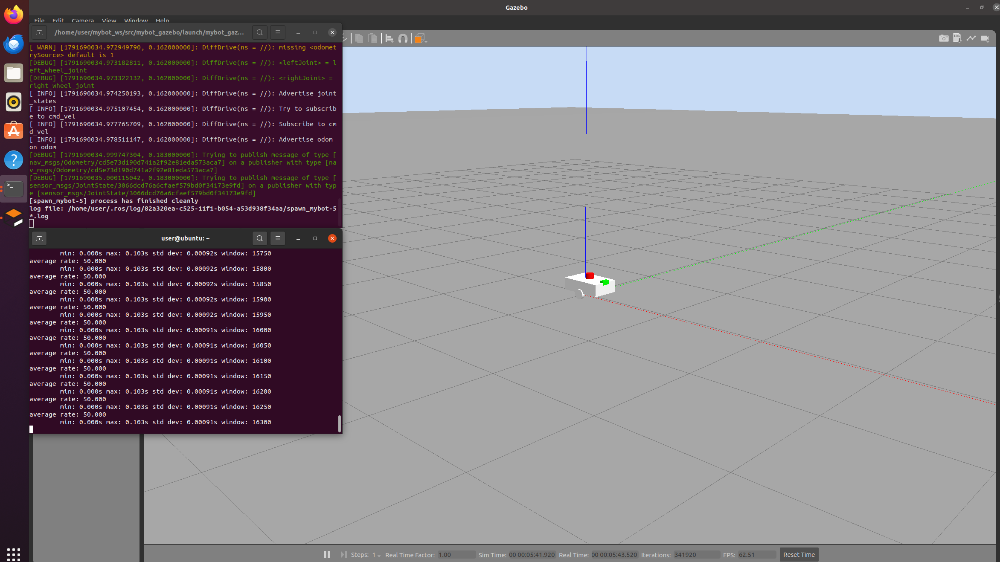
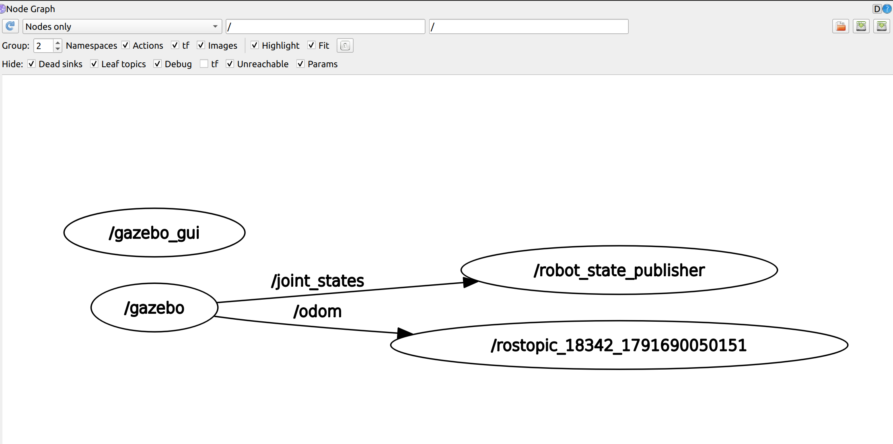
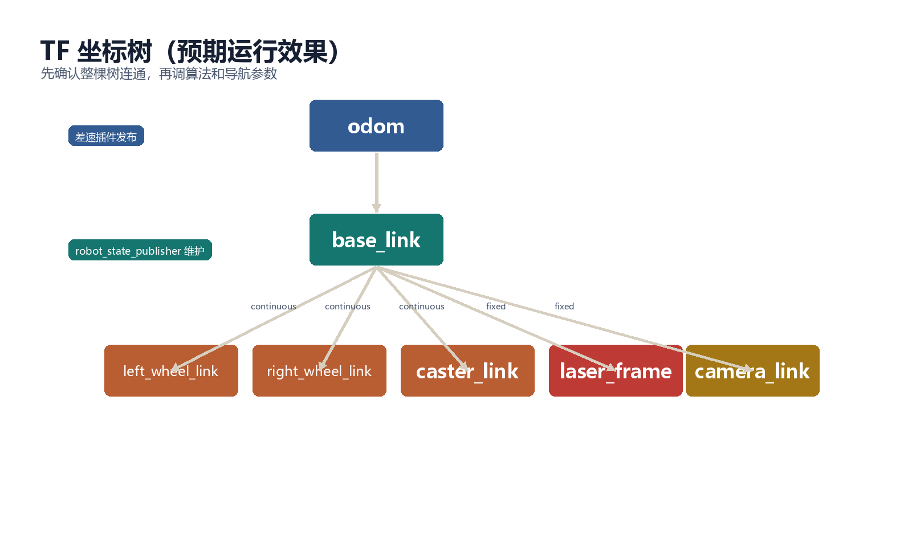

步骤 7：首次启动与验证
前置条件：完成步骤 6。 本步目标：第一次完整启动 Gazebo，验证模型、话题、TF 和传感器。 预计时间：40-60 分钟。
1. 启动前检查
确认工作空间已编译：
cd ~/catkin_ws
catkin_make
source devel/setup.bash单独检查 xacro：
xacro src/mybot_gazebo/urdf/mybot.urdf.xacro > /tmp/mybot.urdf
check_urdf /tmp/mybot.urdf只有 xacro 和 URDF 检查通过后，再启动完整仿真。
2. 启动仿真
roslaunch mybot_gazebo mybot_gazebo.launch如果只需要后台运行：
roslaunch mybot_gazebo mybot_gazebo.launch gui:=false3. Gazebo 现象
正确启动后应看到：
- Gazebo 世界加载；
- 机器人位于地面附近；
- 车身不会持续抖动、掉落或穿透地面；
- 左右轮和支撑轮与地面接触；
- 激光和相机模型固定在车体上；
- 终端没有“找不到插件”的持续错误。
如果模型出现但马上掉下去，先关闭 launch，调整生成位置和支撑轮高度，不要继续测试控制。

虚拟机实际运行效果：

用 rqt_graph 可以确认 /joint_states 与 /odom 的连接关系：

4. 话题验证
source ~/catkin_ws/devel/setup.bash
rosnode list
rostopic list | sort重点确认：
| 话题 | 类型 | 发布者 |
|---|---|---|
/cmd_vel |
geometry_msgs/Twist |
控制节点或命令行 |
/odom |
nav_msgs/Odometry |
diff_drive 插件 |
/joint_states |
sensor_msgs/JointState |
差速插件 |
/scan |
sensor_msgs/LaserScan |
激光插件 |
/camera/image_raw |
sensor_msgs/Image |
相机插件 |
/camera/camera_info |
sensor_msgs/CameraInfo |
相机插件 |
检查具体连接：
rostopic info /cmd_vel
rostopic info /odom
rostopic info /scan
rostopic hz /odom
rostopic hz /scan
rostopic hz /camera/image_raw如果 /cmd_vel 有发布者但没有订阅者，说明差速插件没有加载或话题名不一致。
5. TF 验证
rosrun rqt_tf_tree rqt_tf_tree
rosrun tf tf_echo odom base_link
rosrun tf tf_echo base_link laser_frame
rosrun tf tf_echo base_link camera_link预期 TF：

graph TD
ODOM[odom] --> BASE[base_link]
BASE --> LW[left_wheel_link]
BASE --> RW[right_wheel_link]
BASE --> CASTER[caster_link]
BASE --> LASER[laser_frame]
BASE --> CAMERA[camera_link]
判断标准：
tf_echo不报 “Could not find transform”；odom -> base_link会随机器人运动变化；base_link -> laser_frame和camera_link保持固定；- TF 的时间戳与
/use_sim_time一致。
6. 传感器验证
激光：
rostopic echo -n 1 /scan确认 frame_id 为 laser_frame，ranges 有 360 个值。
相机：
rosrun rqt_image_view rqt_image_view在下拉框中选择 /camera/image_raw。如果画面是空白，检查相机朝向，必要时在场景中添加物体。
7. 常见问题
| 现象 | 可能原因 | 处理 |
|---|---|---|
| Gazebo 没有模型 | spawn_model 失败 | 检查 xacro、robot_description |
| 模型下沉 | 生成高度或惯性错误 | 调整 -z 和质量参数 |
| 模型抖动 | 碰撞体过复杂或质量太小 | 简化碰撞体，提高质量 |
/cmd_vel 无订阅者 |
diff_drive 未加载 | 检查插件库名和 Gazebo 日志 |
无 /odom |
插件未启动或 joint 名错误 | 检查左右关节名 |
| TF 断开 | robot_state_publisher 未运行 | 检查 /joint_states 和节点列表 |
没有 /scan |
激光插件或 frame 名错误 | 检查 frame_name 和 TF |
| 相机黑屏 | 场景无光照或镜头朝向错误 | 检查 sun、相机安装方向 |
8. 本步验收
- [ ] Gazebo 中机器人稳定站立；
- [ ]
rosnode list中有状态发布器和 Gazebo 相关节点； - [ ]
/odom、/scan、相机话题都存在； - [ ] TF 树完整且时间戳正常；
- [ ]
rqt_image_view能看到图像； - [ ] 能通过话题和 TF 判断仿真是否启动成功。
- 上一步：世界文件与 launch
- 返回教程总览
- 下一步：步骤 8：手动速度控制